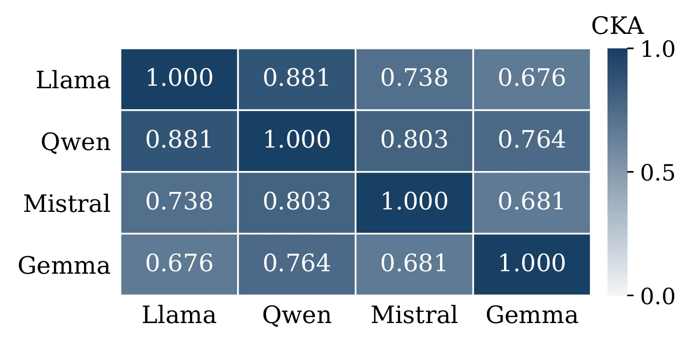

Skin-Deep: A Geometric Diagnostic for Alignment Fragility in Large Language Model Representations
Findings of AACL-IJCNLP 2026
1Zoom Communications 2Korea University 3Yonsei University 4Konkuk University
*Equal contribution †Corresponding authors
![Diagram. Matched harmful and benign prompts give residual activations in an aligned model and in its base model, and the covariance contrast between the two, cPCA, defines a direction in every layer. Three stacked layer planes run from early to late. On the late plane the solid cPCA-PC1 arrow and a dashed Arditi reference arrow are separated by an angle marked 1 minus c sub l, and harmful and benign projections lie apart along the cPCA-PC1 arrow, marked Separation. A depth-weighted sum over the layers gives GFS.](assets/overview.webp)
Abstract
Refusal on a safety benchmark does not reveal how stable that behavior will remain after model updates. Benign downstream fine-tuning can weaken refusal, yet behavioral evaluations typically expose this fragility only after an intervention. We introduce Skin-Deep, a geometric diagnostic that examines the unmodified model's residual-stream activations. It compares aligned and base checkpoints to identify safety-separating directions, tests their behavioral relevance through ablation, and summarizes the layer-wise pattern in the Geometric Fragility Score (GFS). Across twenty-one instruction-tuned models, harmful requests and benign instructions exhibit a recurring low-rank separation pattern. Selected direction ablations weaken refusal, with the effective direction varying across models. In benign low-rank fine-tuning experiments, the initially safe model with the lowest score before fine-tuning has the lowest harmful-compliance rate when trained on the largest tested set of harmless examples. These findings connect representation geometry to subsequent behavioral susceptibility and support activation-based diagnostics as a complement to refusal tests. Our code is available at https://
Geometric Fragility
The paper calls refusal geometrically fragile when it is associated with a low-rank activation pattern that selected direction interventions can disrupt. Skin-Deep compares an aligned model \(M\) with its version-matched base counterpart \(M_0\) on the same prompts. The safety set \(\mathcal{D}_{\mathrm{safe}}\) contains harmful requests that an aligned assistant should refuse, and the general set \(\mathcal{D}_{\mathrm{gen}}\) contains benign instructions. At each layer \(\ell\), activations are collected at the final token and centered, giving covariance matrices \(\Sigma^{\mathrm{inst}}_\ell\) and \(\Sigma^{\mathrm{base}}_\ell\).
-
Step 1
Contrast aligned and base covariances
Contrastive PCA finds a unit direction with large aligned-model variance relative to base-model variance. Both covariance matrices use the same prompt mixture, so their difference isolates the contrast between checkpoints.
\[\mathbf{v}^{\mathrm{cPCA}}_\ell=\arg\max_{\|\mathbf{v}\|=1}\mathbf{v}^{\top}\bigl(\Sigma^{\mathrm{inst}}_\ell-\alpha\Sigma^{\mathrm{base}}_\ell\bigr)\mathbf{v}\]
The leading eigenvector supplies cPCA-PC1, and \(\alpha = 100\) sets how strongly base-model variance is penalized.
-
Step 2
Measure harmful and benign separation
With the scalar projection \(z_\ell(x)=\mathbf{v}_\ell^\top h_\ell(x)\), Cohen's \(d\) measures the difference between harmful and benign projected means relative to their pooled standard deviation.
\[d_\ell=\frac{\mu_{\mathrm{safe},\ell}-\mu_{\mathrm{gen},\ell}}{s_{\mathrm{pooled},\ell}}\]
PERMANOVA assesses the split in the full activation space, without projection onto cPCA-PC1.
-
Step 3
Test directions through ablation
At a model-specific peak-separation layer \(\ell^\star\), a unit direction is projected out of the residual stream during generation.
\[\widetilde h_{\ell^\star}=h_{\ell^\star}-\bigl(\mathbf{v}_{\ell^\star}^{\top}h_{\ell^\star}\bigr)\mathbf{v}_{\ell^\star}\]
PCA-PC1, cPCA-PC1, the Arditi direction, and a random direction are compared under this same intervention.
-
Step 4
Summarize the layers in GFS
The score combines separation, depth, and angular distance from the Arditi direction, the normalized harmful-minus-benign mean difference.
\[\mathrm{GFS}(M)=\sum_{\ell=1}^{L}w_\ell\,|d_\ell|\,(1-c_\ell)\]
Here \(c_\ell=|\cos(\mathbf{v}_\ell,\mathbf{v}^{\mathrm{Arditi}}_\ell)|\) for the cPCA-PC1 direction \(\mathbf{v}_\ell\), and the default depth weight is \(w_\ell=\ell/L\). A high score indicates separation that extends away from the reference axis.
The default aggregation sums layer contributions without normalization. Its total weight is \(\sum_{\ell=1}^{L}\ell/L=(L+1)/2\), so GFS reflects both the separation-and-overlap profile and model depth.
Activation extraction and the geometric measurements precede any weight update or adversarial optimization. Scores are compared within an extraction protocol, since prompt formatting and token position change the activations being summarized.
The study covers twenty-one instruction-tuned models with 3B–32B parameters, using overlapping cohorts for each analysis. Activation measurements use 500 harmful requests and 500 benign instructions matched by token count. The harmful set combines 200 AdvBench prompts, 200 HarmBench prompts, and 100 BeaverTails prompts, and the benign set combines 250 Alpaca instructions and 250 OASST instructions.
Safety-Separating Geometry
In the split-sample check, cPCA directions are fitted on one half of the prompts and separation is measured on the other half. For the four core models, the bootstrap intervals lie above zero. Across a broader fourteen-model check, the mean train-minus-test gap is +0.070, nine models have an absolute gap below 0.08, and the minimum held-out effect is 1.69 for Qwen-2.5-3B.
PERMANOVA remains significant after correction for all core models, so the harmful and benign distinction is visible outside a single projection. Unit-normalized PCA also retains separation, which rules out activation magnitude as its sole explanation.
| Model | Held-out \(d\) [95% CI] | Probe acc. |
|---|---|---|
| Llama-3.1-8B | 3.23 [2.96, 3.51] | 0.937 |
| Qwen-2.5-7B | 2.97 [2.68, 3.24] | 0.959 |
| Mistral-7B-v0.3 | 2.71 [2.50, 2.95] | 0.904 |
| Gemma-2-9B | 2.88 [2.56, 3.12] | 0.926 |
Scroll sideways to see every column.
Held-out cPCA separation and linear-probe accuracy for the core models. Separation estimates include 95% bootstrap percentile intervals.
The separation persists under model-specific chat formatting, across an eight-model cohort with different training labels. Overlap with the Arditi direction is measured by the smallest principal angle \(\theta_\ell\) between that direction and the top-five cPCA subspace with orthonormal basis \(Q_\ell\), where \(\cos\theta_\ell=\|Q_\ell^\top\mathbf{v}^{\mathrm{Arditi}}_\ell\|_2\). The Arditi direction lies within 20° of the subspace in five of the eight models. This supports overlap between the recovered subspace and a known refusal direction, rather than equivalence between cPCA-PC1 and that direction. For Starling, substantial separation coexists with weak overlap.
| Model | Training label | Peak \(|d|\) | Peak layer | Relative depth | \(\theta\) | \(\cos\theta\) |
|---|---|---|---|---|---|---|
| Mistral-7B-Instruct-v0.2 | SFT | 7.031 | 22/32 | 0.69 | 11.3° | 0.98 |
| Mistral-7B-Instruct-v0.3 | IFT | 6.157 | 19/32 | 0.59 | 8.8° | 0.99 |
| Yi-1.5-9B-Chat | IFT | 5.078 | 46/48 | 0.96 | 8.1° | 0.99 |
| openchat-3.5-1210 | C-RLFT | 5.012 | 12/32 | 0.38 | 17.4° | 0.95 |
| Hermes-2-Pro-Mistral-7B | DPO | 4.941 | 13/32 | 0.41 | 13.1° | 0.97 |
| SOLAR-10.7B-Instruct | DPO | 4.713 | 46/48 | 0.96 | 29.1° | 0.87 |
| Starling-LM-7B-alpha | RLAIF | 2.653 | 31/32 | 0.97 | 76.7° | 0.23 |
| Nous-Hermes-2-Mistral-7B-DPO | DPO | 2.520 | 1/32 | 0.03 | 40.8° | 0.76 |
Scroll sideways to see every column.
Chat-template separation and subspace overlap. \(\theta\) is the smallest principal angle between the top-five cPCA subspace and the Arditi direction. Its cosine measures projected overlap with the subspace.
The peak location also matters, because an early peak can capture input-format structure rather than the representation used to generate a refusal. In a separate five-model check, first-token separation is weak, whereas both final-token and mean-pooled activations retain a substantial signal.
Direction-Specific Refusal Changes
Each selected direction is removed at a peak-separation layer, and harmful-request refusal is evaluated on 100 AdvBench prompts. At least one tested direction gives a detectable refusal decrease in four of the six ablation models. The effective intervention differs by model. PCA-PC1 produces the clearest decrease for Llama, whereas the Arditi direction does so for Qwen and SOLAR. Mistral-v0.2 responds to all three non-random directions.
| Model | Baseline | PCA-PC1 | cPCA-PC1 | Arditi | Random |
|---|---|---|---|---|---|
| Llama-3.1-8B | 0.14 | 0.02⋆ | 0.17 | 0.14 | 0.14 |
| Qwen-2.5-7B | 0.86 | 0.84 | 0.86 | 0.68⋆ | 0.86 |
| Mistral-7B-v0.2 | 0.31 | 0.08⋆ | 0.09⋆ | 0.13⋆ | 0.28 |
| SOLAR-10.7B | 0.22 | 0.17 | 0.11 | 0.06⋆ | 0.21 |
| Mistral-7B-v0.3 | 0.04 | 0.00 | 0.05 | 0.02 | 0.05 |
| Gemma-2-9B | 0.96 | 0.93 | 0.96 | 0.92 | 0.96 |
Scroll sideways to see every column.
Harmful-request refusal after direction ablation. Bold starred entries have a post-ablation Wilson 95% confidence interval entirely below the baseline interval.
Random-direction rates remain close to the corresponding baselines. This comparison supports direction-specific effects rather than a uniform consequence of modifying the residual stream. The effects include both decreases and increases in refusal. PCA, cPCA, and the Arditi mean-difference direction select different aspects of the representation, and their removal has different effects within the same checkpoint, which is why variance dominance is a partial guide to behavioral importance.
Cross-Family Recurrence
Linear CKA compares the activation matrices of two models on the same prompts at their respective peak layers. The core families preserve similar activation relationships among the matched prompts. Every off-diagonal pair exceeds the prompt-shuffle null, with no shuffled run reaching its observed CKA and reported \(p<0.001\).
The depth-normalized separation profiles have both positive and negative correlations across model pairs. High CKA therefore coexists with different peak depths. Shared prompt relationships do not imply a shared layer schedule. Tokenization and activation-norm structure can also affect high-dimensional CKA. The prompt-shuffle control establishes dependence on prompt correspondence, while the separate norm and token-position checks address other aspects of the representation.


Geometry Before LoRA
On raw prompts, sixteen models receive a GFS. The four DPO-labelled models occupy the leading positions, while models with strong separation can still receive low scores when their candidate directions align closely with the reference refusal axis. Since the ranking contains different families and sizes, it describes these checkpoints rather than isolating an effect of the training algorithm. Its behavioral relevance is tested within the smaller LoRA cohort.
| Rank Model | Family | Training label | Layers | Peak depth | Peak \(|d|\) | GFS |
|---|---|---|---|---|---|---|
| 1 Nous-Hermes-2-Mistral-7B | Mistral | DPO | 32 | late | 3.65 | 2.333 |
| 2 Tulu-3-8B-DPO | Llama | DPO | 32 | late | 3.93 | 2.285 |
| 3 Zephyr-7B-β | Mistral | DPO | 32 | late | 4.51 | 2.185 |
| 4 Notus-7B-v1 | Mistral | DPO | 32 | late | 4.18 | 2.126 |
| 5 Qwen-2.5-14B | Qwen | RLHF+SFT | 48 | late | 3.28 | 1.899 |
| 6 Llama-3.2-3B | Llama | RLHF+SFT | 28 | late | 3.43 | 1.868 |
| 7 Qwen-2.5-7B | Qwen | RLHF+SFT | 28 | mid | 3.01 | 1.670 |
| 8 Llama-3.1-8B | Llama | RLHF+SFT | 32 | late | 2.44 | 1.597 |
| 9 Orpo-Llama-3-8B | Llama | ORPO | 32 | late | 2.93 | 1.557 |
| 10 Qwen-2.5-32B | Qwen | RLHF+SFT | 64 | late | 3.27 | 1.484 |
| 11 Mistral-7B-v0.3 | Mistral | IFT | 32 | early/late | 2.72 | 1.469 |
| 12 Qwen-2.5-3B | Qwen | RLHF+SFT | 36 | late | 2.46 | 1.468 |
| 13 Gemma-2-9B | Gemma | RLHF+SFT | 42 | mid | 3.38 | 1.315 |
| 14 Mistral-7B-Instruct-v0.1 | Mistral | SFT | 32 | late | 3.53 | 1.279 |
| 15 Yi-1.5-9B-Chat | Yi | IFT | 48 | mid | 3.08 | 0.962 |
| 16 Mistral-Nemo-12B | Mistral | RLHF+SFT | 40 | late | 3.00 | 0.160 |
Scroll sideways to see every column.
Raw-prompt GFS ranking, training labels, and descriptive peak separation. Depth categories summarize peak locations. IFT denotes instruction fine-tuning without a specified preference-optimization stage.
The LoRA cohort adds three initially safe models, Tulu-3-8B-DPO, Qwen-2.5-3B, and Qwen-2.5-14B, to the four core models, where initially safe means a pre-LoRA harmful compliance of at most 0.1. LoRA fine-tuning uses rank-eight adapters on harmless Alpaca subsets of \(n\in\{5,10,25,50,100,150,200\}\) examples, and harmful compliance is measured on 50 held-out harmful prompts using a rule-based harm-string match together with Llama-Guard. Three random seeds are used for Llama, Qwen, and Mistral, and for Gemma at \(n=200\). The other Gemma entries and the three added models provide the reported trajectories without a multi-seed uncertainty estimate. Benign LoRA fine-tuning can sharply increase harmful compliance in both the core models and the initially safe additions. At \(n=200\), Gemma is the only model below full compliance. Its non-monotonic trajectory also reaches full compliance at intermediate sizes.
![Two line plots of harmful compliance against the number of LoRA training examples n, at 0, 5, 10, 25, 50, 100, 150 and 200, equally spaced. (a) Core models. Llama-3.1-8B starts at 0.3 and Mistral-7B-v0.3 near 0.84, and both reach 1.0 at n equal to 5. Qwen-2.5-7B and Gemma-2-9B start near 0 and reach 1.0 at n equal to 10. Gemma ends at a mean near 0.68 at n equal to 200, with a bar from about 0.48 to 0.80, while the other three stay at 1.0. (b) Additional models. Tulu-3-8B-DPO, Qwen-2.5-3B and Qwen-2.5-14B start near 0. Tulu rises to 0.8 at n equal to 5, and all three are at or near 1.0 from n equal to 10 onward.](assets/lora.webp)
The added models begin with low harmful compliance and have higher GFS than Gemma. All reach full compliance with the largest tested fine-tuning set. Among the initially safe cases, Gemma is both the lowest-scoring model and the one with the lowest endpoint harmful-compliance rate. The endpoint distinction persists across the replicated runs. Every non-Gemma core run reaches full compliance, while Gemma's mean is 0.68 with standard deviation 0.17 and range 0.48–0.80.
Interpreting the Score
Within the core set, Gemma has the largest layer-averaged cPCA-PC1 cosine with the Arditi direction, so the cosine term of GFS downweights more of its separation signal. The component with the strongest reference overlap is not always PCA-PC1, and the ablation results show that variance dominance does not determine the behavioral effect.
| Model | PCA index | PCA cosine | cPCA cosine |
|---|---|---|---|
| Llama-3.1 | PC3 | 0.295 | 0.16 |
| Qwen-2.5 | PC1 | 0.333 | 0.26 |
| Mistral-v0.3 | PC9 | 0.291 | 0.10 |
| Gemma-2 | PC1 | 0.636 | 0.33 |
Scroll sideways to see every column.
Reference-direction overlap in the core models. The PCA index identifies the largest PCA–Arditi cosine. The last column gives the layer-averaged absolute cPCA-PC1–Arditi cosine.
The layer profiles show how the core models differ across depth. Panel A gives a descriptive maximum over ten principal components, which is distinct from the cPCA-PC1 effect size entering GFS. Panel B shows the cPCA-PC1 reference overlap used by the score. Gemma's reference overlap is strongest through much of the later-layer region, where the score assigns greater weight. This profile connects its lower score to the reference-direction term.
![Two line plots against relative depth from 0 to 1 for Llama-3.1-8B, Qwen-2.5-7B, Mistral-7B-v0.3 and Gemma-2-9B, with Gemma drawn as a thick line. (A) Peak Cohen's d, the maximum over 10 principal components, lies between about 1.2 and 3.4 for all four models, and Gemma has peaks near 0.5 of depth and at the last layer. (B) The absolute cosine between cPCA-PC1 and the Arditi direction stays low for Llama, Qwen and Mistral, apart from an early spike for Mistral, while Gemma's cosine rises through the later layers to about 0.69 and then falls.](assets/layer-profiles.webp)
The paper states the scope of this evidence. The LoRA evidence concerns one harmless-data fine-tuning protocol and a small, heterogeneous model cohort. It supports an endpoint association among initially safe models, not a calibrated forecast across attacks, update sizes, or training recipes. Full-space similarity and subspace overlap complement the behavioral tests, but neither identifies a universal refusal direction or demonstrates that the cosine term itself protects a model against fine-tuning. The analysis covers English prompts and open-weight models with 3B–32B parameters, and the direction-ablation models occupy a narrower 7–10.7B range. The cPCA comparison requires a version-matched base checkpoint.
The intended use is defensive assessment of open-weight models. The disclosure boundary separates the activation diagnostic and aggregate measurements from operational attack artifacts. It excludes generation-time ablation hooks, attack-ready direction-extraction scripts, and the LoRA adapter weights used for the behavioral tests.
BibTeX
@article{lee2026skin,
title={Skin-Deep: A Geometric Diagnostic for Alignment Fragility in Large Language Model Representations},
author={Lee, Dongyub Jude and Lee, Jungseob and Lee, Seungyoon and Hong, Seongtae and Son, Suhyune and Eo, Sugyeong and Seo, Jaehyung and Lim, Heuiseok},
journal={arXiv preprint arXiv:2606.22676},
year={2026}
}